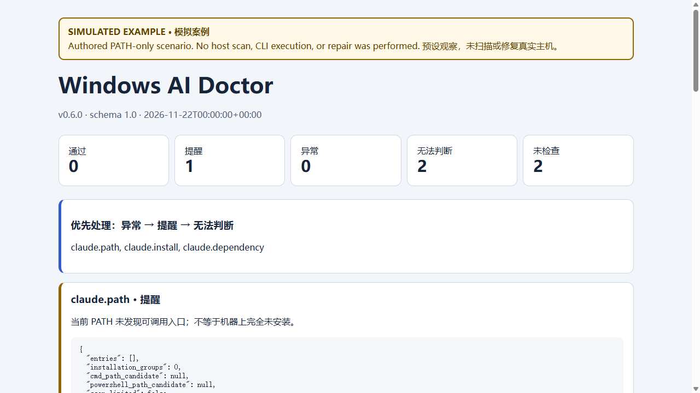

Windows · Claude Code · Codex CLI · English
SIMULATED EXAMPLE
Windows 上 Claude / Codex 命令找不到时，先看哪一层坏了
离线只读诊断：PATH、重复安装、启动器运行时、配置语法、WSL 可见性。下面是模拟案例，不是真实主机扫描。
打开中文模拟报告 English sample GitHub 仓库 查看模拟调整后的报告

- 现象此模拟案例中，出问题的终端在 PATH 内找不到 Claude 入口；未执行 CLI。
- 打开报告先看 error / warn，通常从 claude.path 或 codex.path 开始。
- 手动核对在出问题的终端跑 Get-Command claude,codex -All 与 where.exe。
- 复查模拟调整 PATH 后，claude.path 从 warn 变为 pass；这不代表登录或实际 AI 任务已验证。
SIMULATED · 无安装、无自动修复、无登录、不上传配置、不调用模型 API。 · 排障长文